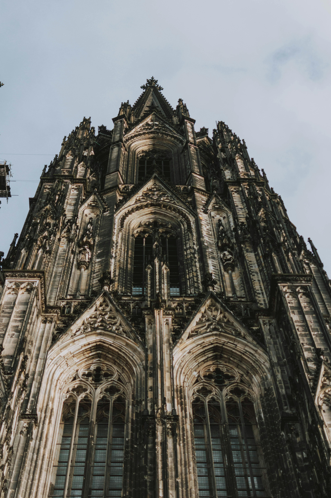
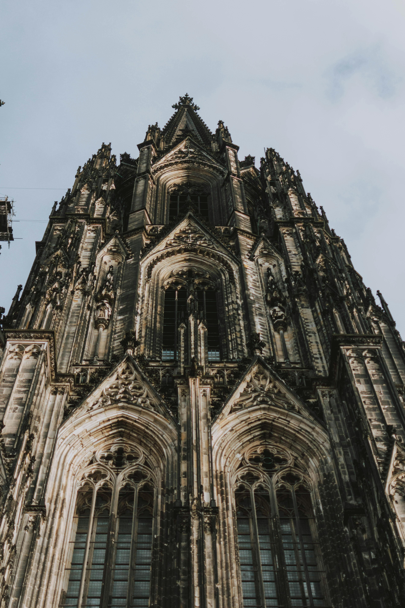
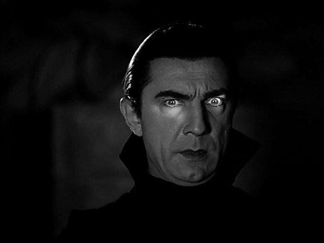
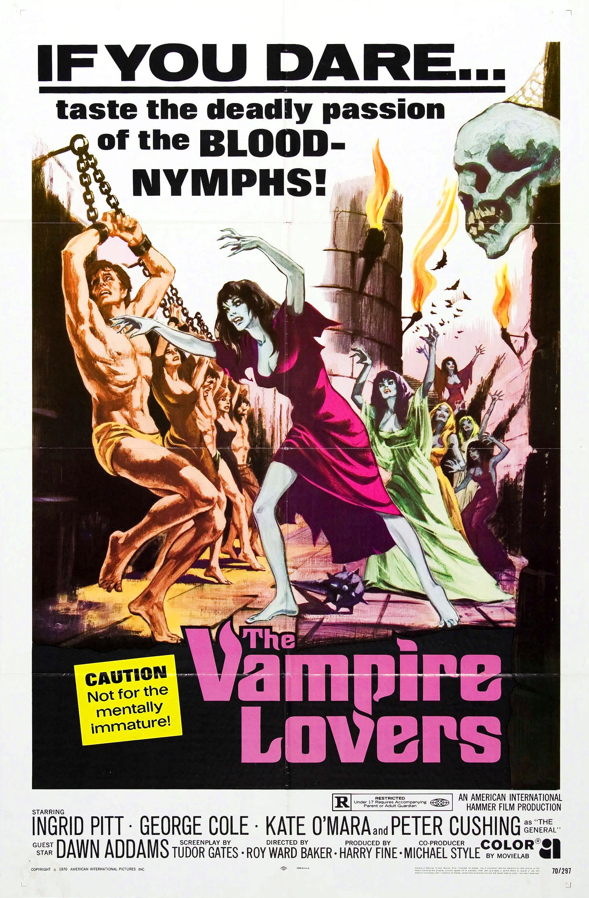
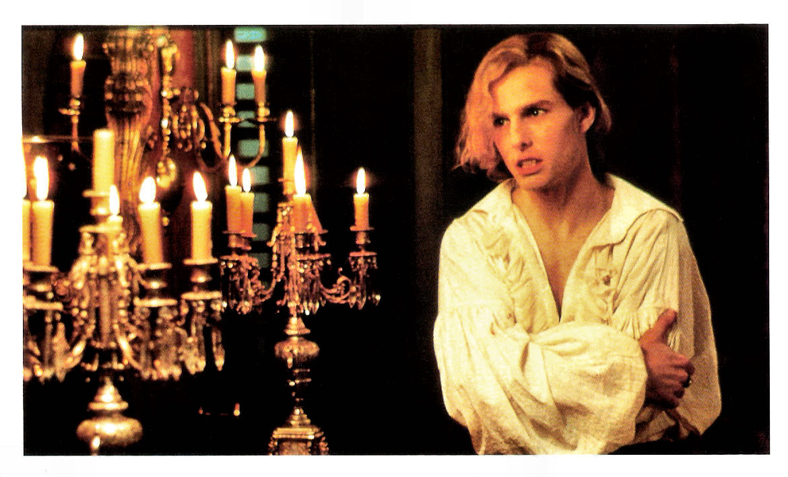
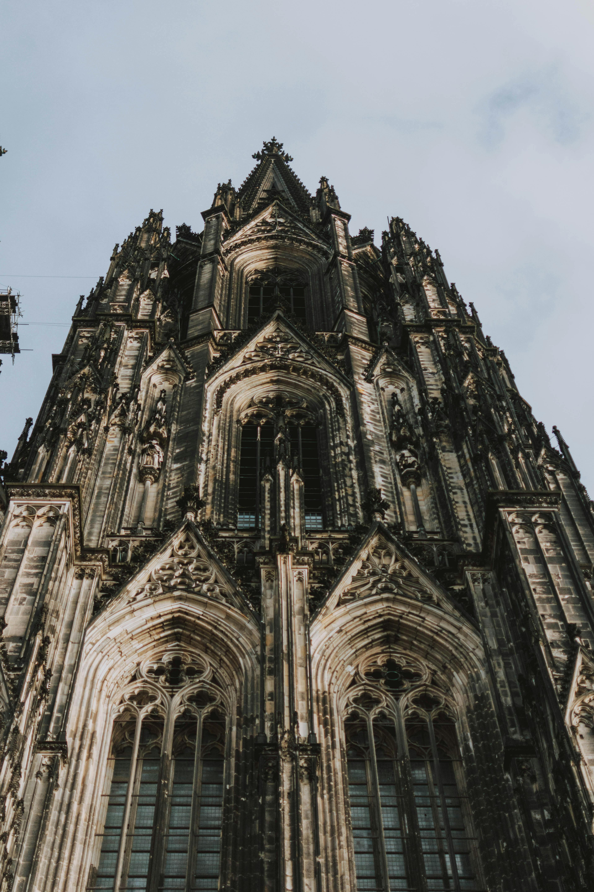

A subcultura gótica apareceu no final dos anos 70 e começo dos anos 80, surgindo de várias culturas jovens da época. Hoje em dia, ela é super importante para a identidade de grupo. As roupas e o estilo se tornaram uma forma de expressar quem as pessoas são e mostrar que fazem parte do grupo, além de se destacarem na sociedade. Usando os estudos de identidade de Stuart Hall e Anthony Giddens, o conceito de moda de Gilles Lipovetsky e o hibridismo homem-objeto de Daniel Miller, a ideia é pensar sobre como as roupas funcionam como uma extensão da identidade pessoal dos góticos e ajudam a criar uma identidade coletiva.
Originária do pós-punk, ela se destacou pela sua estética sombria, introspectiva e, muitas vezes, romântica, que rapidamente se manifestou não apenas na moda e nas artes visuais, mas principalmente na música. Bandas pioneiras como Bauhaus, com seu single "Bela Lugosi's Dead", The Cure e Siouxsie and the Banshees, definiram o som gótico inicial, caracterizado por guitarras atmosféricas, linhas de baixo marcantes e vocais melancólicos. A música gótica evoluiu ao longo das décadas, incorporando elementos eletrônicos e industriais, mas mantendo sempre sua essência introspectiva e muitas vezes melancólica. No âmbito da mídia, a subcultura gótica encontrou um espaço vital na proliferação de revistas, programas de rádio e, mais recentemente, plataformas digitais e redes sociais, que ajudaram a disseminar sua música e estética. Revistas como a "Propaganda" e a "Gothic Beauty" desempenharam papéis cruciais na promoção de novas bandas e eventos góticos, enquanto programas de rádio e DJs especializados mantiveram viva a chama da música gótica. Bandas contemporâneas como Evanescence e HIM, embora mais comerciais, trouxeram elementos góticos para um público mais amplo, mostrando a adaptabilidade e a longevidade da subcultura. A contínua presença e evolução da música gótica na mídia atestam sua resiliência e o profundo impacto cultural que exerce desde seu surgimento.
Os filmes góticos têm uma longa história de fascinação pelo sombrio, pelo macabro e pelo misterioso, frequentemente combinando elementos de terror, fantasia e drama em atmosferas ricas e esteticamente envolventes. Este subgênero cinematográfico explora temas de decadência, morte, romance sombrio e personagens que vivem à margem da sociedade, muitas vezes com uma forte ênfase na arquitetura e na moda que evocam o período medieval e a era vitoriana.
O filme "Drácula" de 1931, dirigido por Tod Browning e estrelado por Bela Lugosi, é uma das obras mais icônicas do cinema de horror. Adaptado da peça de teatro baseada no romance de Bram Stoker, o filme foi fundamental na consolidação da imagem moderna do vampiro. A interpretação de Lugosi como o Conde Drácula foi revolucionária, trazendo uma nova abordagem ao personagem. Com sua postura elegante, olhar penetrante e sotaque distinto, Lugosi transformou Drácula em uma figura ao mesmo tempo sedutora e assustadora, marcando para sempre o imaginário popular. A atmosfera do filme é um dos seus pontos altos, com cenários góticos e um uso eficaz de luz e sombra que realçam o mistério e o terror. O castelo de Drácula na Transilvânia e as paisagens sombrias de Londres são ambientações perfeitas para a trama, contribuindo para a sensação de suspense que permeia o filme. A direção de Browning, juntamente com a cinematografia de Karl Freund, faz uso inteligente desses elementos para criar uma experiência visualmente marcante e envolvente. 
Ambientado no século XIX, "Carmilla" narra a história de uma jovem e misteriosa mulher, Carmilla Karnstein, que se infiltra na vida de uma aristocrata, aproximando-se lentamente, drenando sua vida. O filme destaca a tensão e o subtexto vampírico presente na obra original. A relação entre Carmilla e suas vítimas é explorada de maneira intensa e sombria, trazendo uma complexidade psicológica rara em filmes de terror daquela era.
A estética do filme é rica em elementos góticos: castelos decadentes, paisagens enevoadas, e uma paleta de cores que mistura o vibrante vermelho do sangue com o pálido das vítimas. Esses elementos visuais, combinados com a trilha sonora atmosférica, criam um ambiente de suspense e mistério que é característico dos filmes de terror gótico da Hammer Films. A atuação de Ingrid Pitt no papel de Carmilla é memorável, trazendo uma mistura de beleza, perigo e tragédia ao personagem.
A influência de "Carmilla" se estende além dos filmes da Hammer, inspirando futuras adaptações e interpretações da personagem e da temática do vampirismo. O filme permanece um exemplo clássico do horror gótico, combinando perseguição, suspense e tragédia em uma narrativa que continua a capturar a imaginação dos fãs do gênero.

Baseado no romance de Anne Rice, "Entrevista com o Vampiro" é um dos filmes góticos mais influentes da década de 1990. Com Tom Cruise, Brad Pitt e Kirsten Dunst nos papéis principais, o filme explora a imortalidade, a solidão e o desejo de redenção através da história dos vampiros Louis e Lestat. A ambientação vitoriana e o tom sombrio permeiam o filme, refletindo os dilemas morais e existenciais dos personagens. A cinematografia luxuosa e os cenários ricos em detalhes detalhados para uma atmosfera gótica inigualável. 
A arquitetura gótica surgiu na França durante o século XII e se espalhou por toda a Europa até o século XVI, marcando uma evolução significativa em relação à arquitetura românica que a precedeu. Esse estilo é reconhecido por suas estruturas verticais imponentes, que parecem desafiar a gravidade, transmitindo uma sensação de elevação espiritual. As catedrais góticas são especialmente notáveis por suas alturas impressionantes e pelo uso inovador de vitrais, que permitem a entrada de luz natural e criam uma atmosfera quase etérea. Entre as características mais marcantes da arquitetura gótica estão os arcos ogivais, que permitiram a construção de edifícios mais altos e espaços mais amplos. Outro elemento essencial é a abóbada de nervuras, que ajudou a redistribuir o peso do teto, permitindo o uso de grandes janelas. As fachadas das catedrais góticas são frequentemente decoradas com esculturas detalhadas e rosáceas, que simbolizam a perfeição divina. Essas características não apenas destacam a habilidade técnica dos construtores medievais, mas também refletem o fervor religioso da época, onde a altura e a luz eram vistas como expressões do divino.
